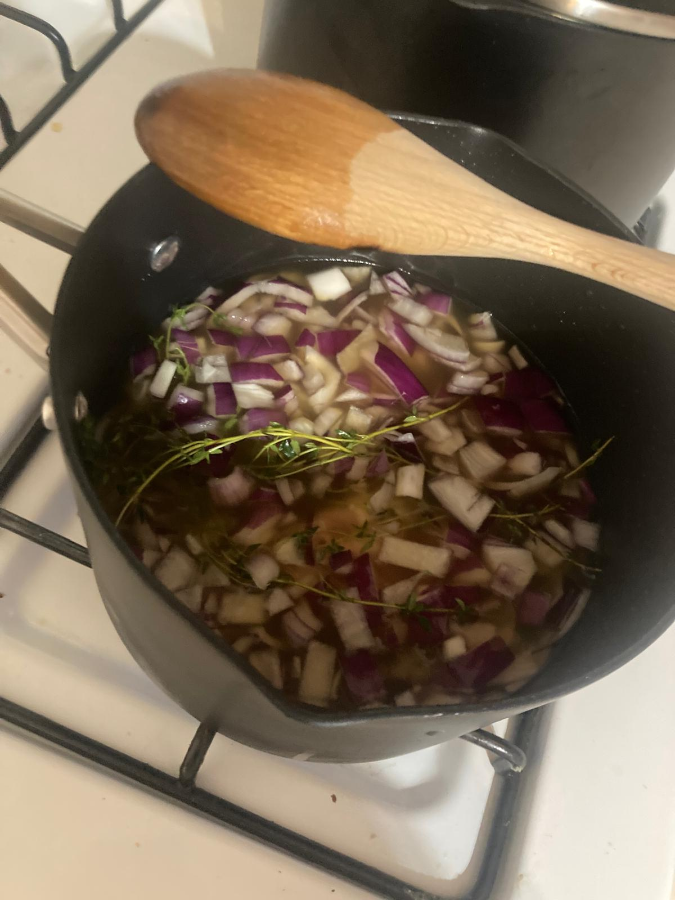
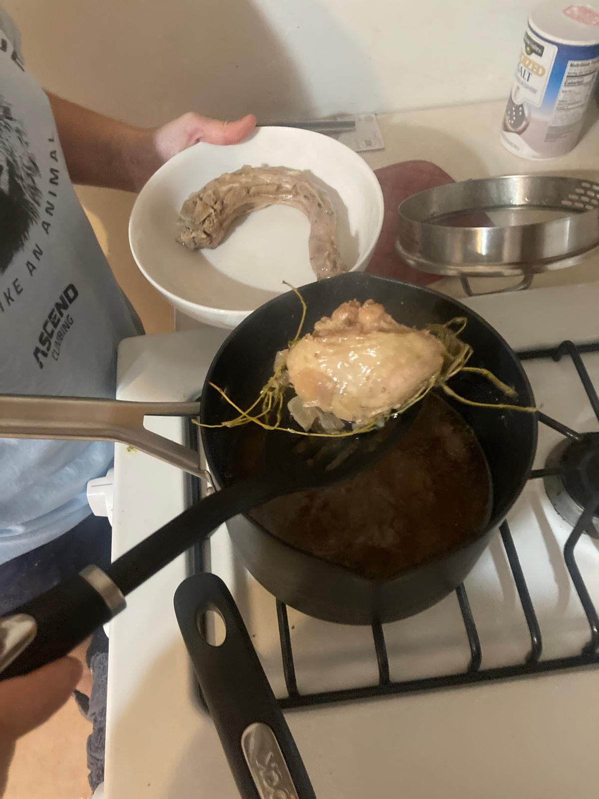
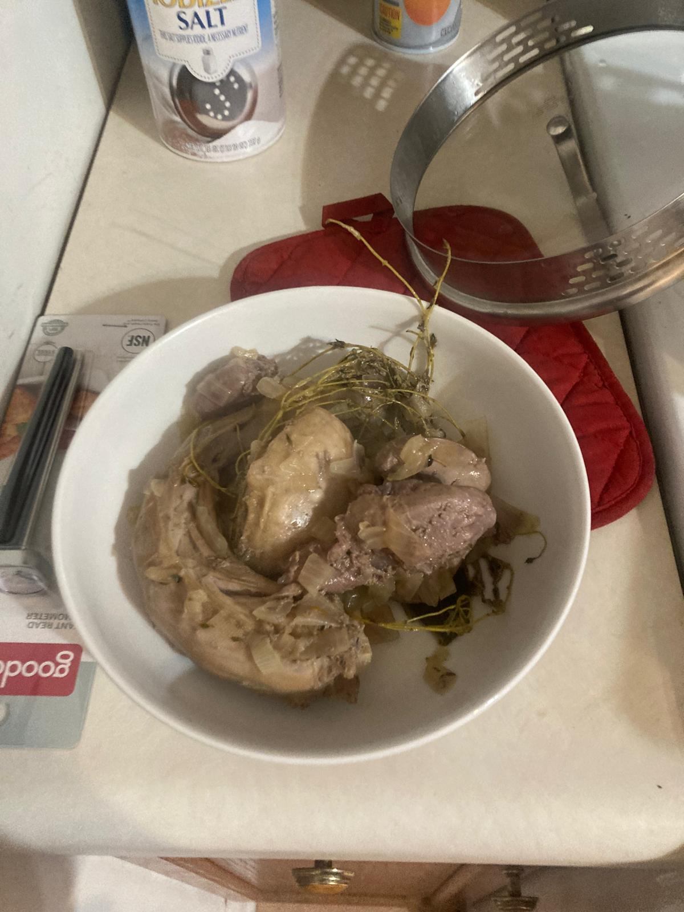
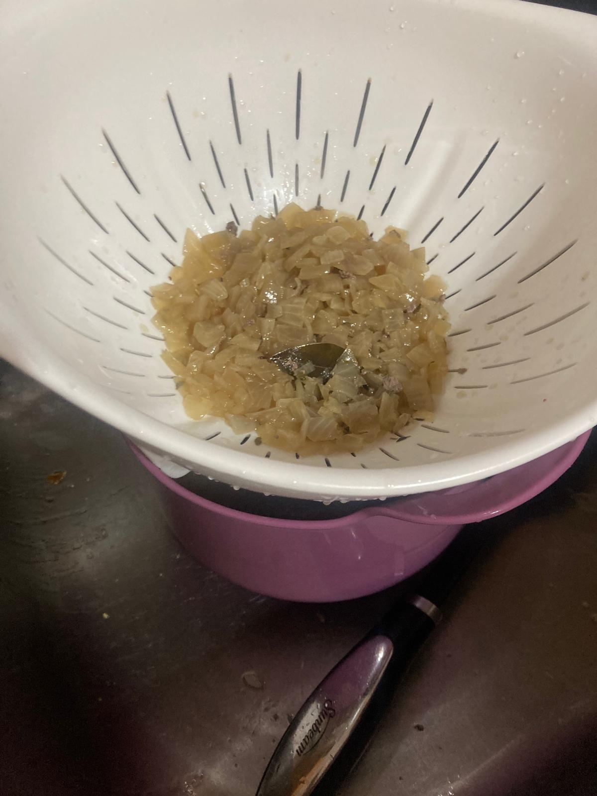
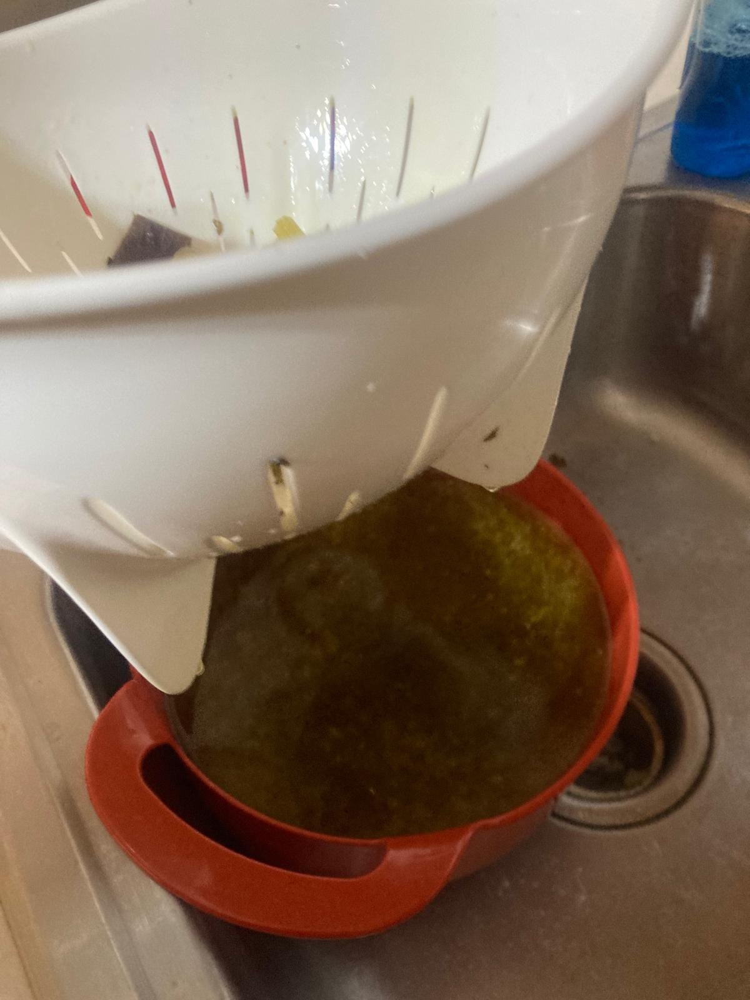
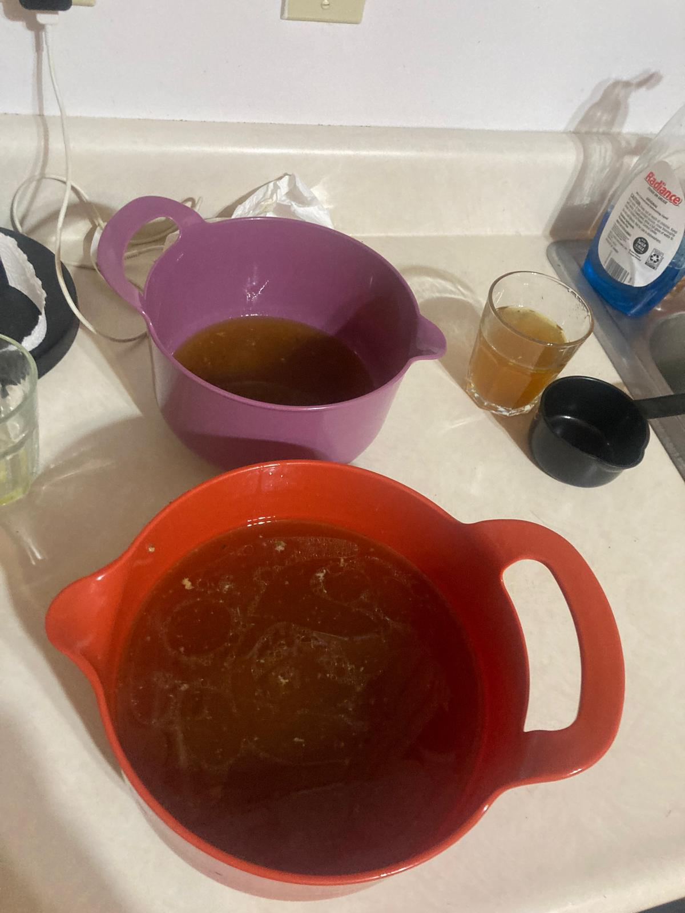
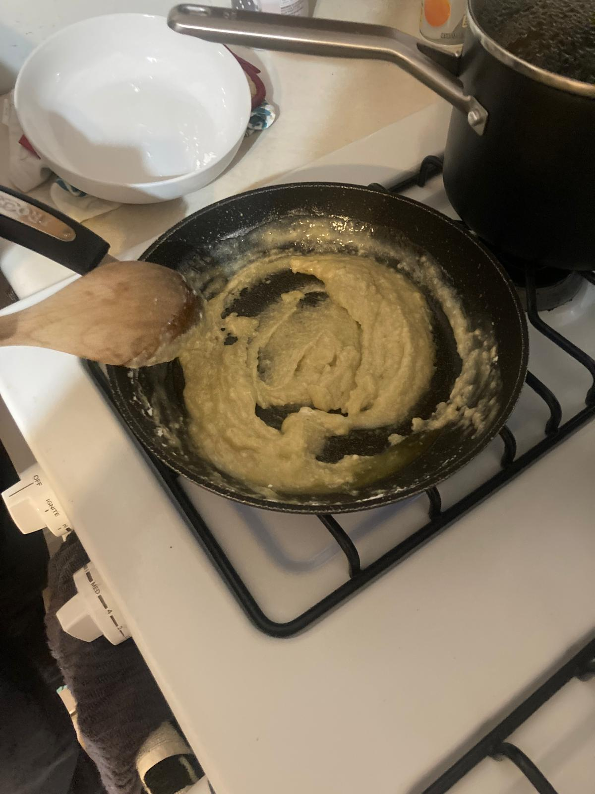
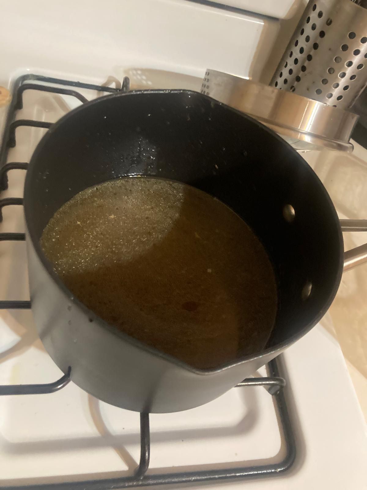
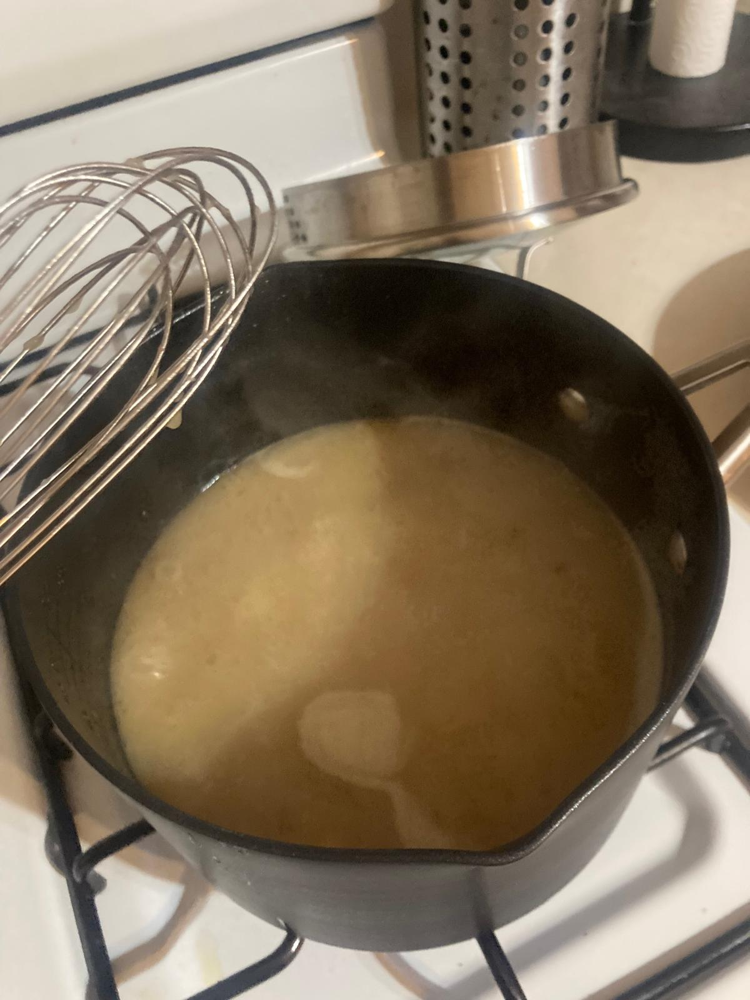
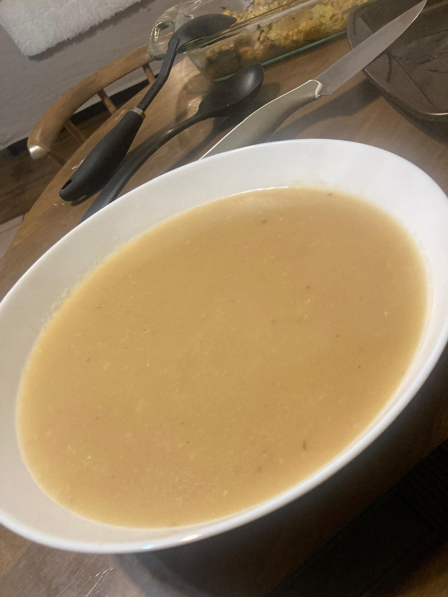

-
Before the turkey is done, we can make the broth:
- Chop the onion. Add the offal, neck, onion, thyme, and bay leaf into a saucepan with the chicken stock. Bring to a simmer, and then cover and simmer for 1h.
- Remove the offal and neck, and the thyme and bay leaf. We can save the offal and neck and chop them up and add them at the very end to the gravy, but I did not do that. Drain the broth to remove the onion chunks.
- Strain the pan dripping from the turkey to remove the vegetables.
- Use a fat separator to separate the fat from the broth of the drippings. If you don't have a separator, use a turkey baster. I didn't have any of those, so I just let it sit in a bowl, it helps if the bowl is clear. The fat will be on top, so I used a spoon to put it on a different container.
- Add 1/2 cup of turkey fat to a small skilleton medium heat. Add the flour and stir with a whisk until a smooth paste is formed. Turn the heat to low and allow the paste to cook slowly to remove any grains from the flour, which should take 2 to 3mins.
- Bring the onion broth to a simmer and pour in 3 cups of the drippings broth. Once simmering, add the paste and simmer for 10min until it is thicker. Stir occasionally.
- Taste for seasoning and add salt and pepper accordingly. I didn't have to add any.

  
After the turkey is done:



 
